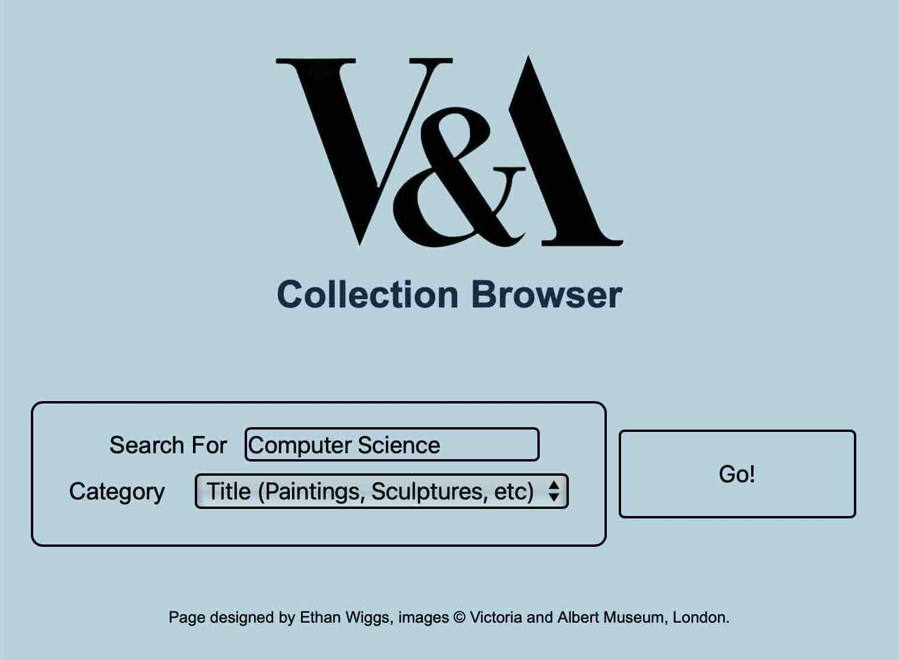
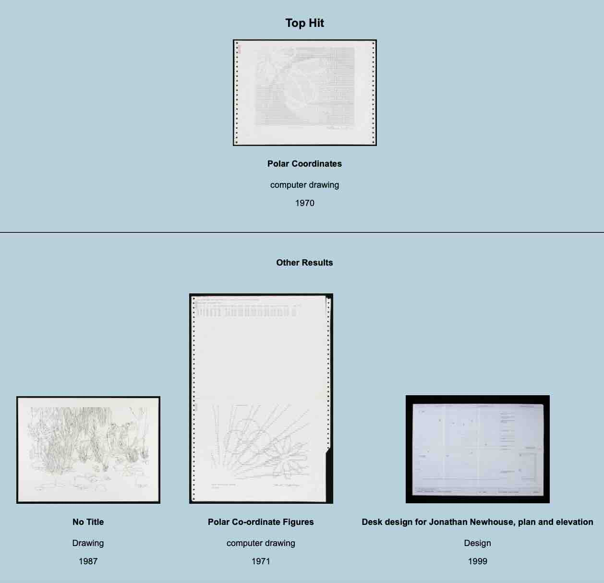

A web application to practice integrating with APIs, the V&A Browser allows users to search for images in the Victoria and Albert Museum's collection. It uses the Fetch API to retrieve images from filters - including name and category.
Searches return a "Top Hit" image, which is most relevant, followed by other images - each with their name, type and date.
This project was created for educational and demonstrative purposes only. All images and branding shown are the property of the Victoria and Albert Museum and are used here solely to showcase API integration with their open-access dataset.